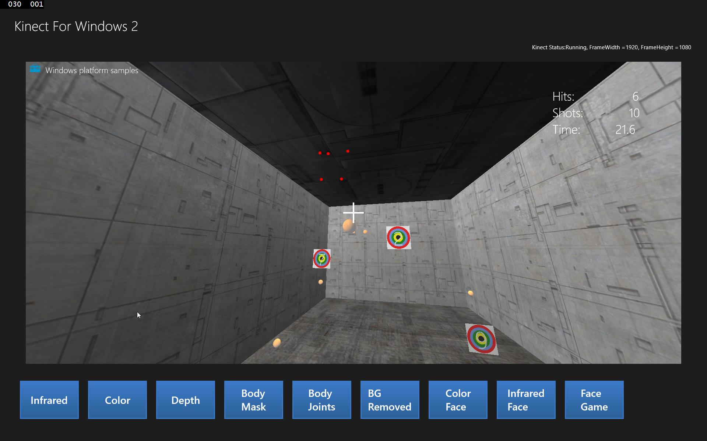
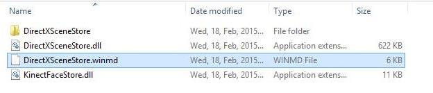
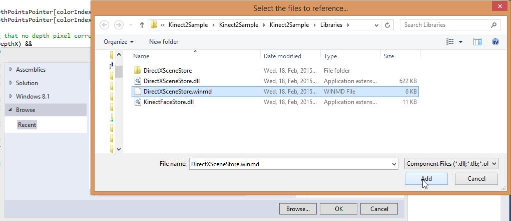
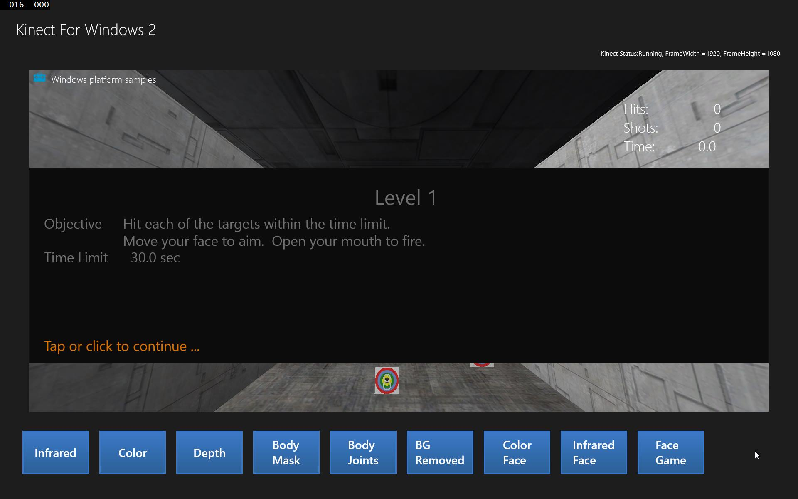

<!DOCTYPE html>
<html>
	<head>
	  <meta charset="utf-8">
	  <meta http-equiv="X-UA-Compatible" content="chrome=1">
	  <title>Kinect 2 for Windows - Hands On Lab 9</title>
	  <link rel="stylesheet" href="../stylesheets/styles.css">
	  <link rel="stylesheet" href="../stylesheets/pygment_trac.css">
	  <link rel="stylesheet" href="http://netdna.bootstrapcdn.com/font-awesome/4.0.3/css/font-awesome.min.css">
	  <script src="../javascripts/scale.fix.js"></script>
	  <meta name="viewport" content="width=device-width, initial-scale=1, user-scalable=no">
	<!--[if lt IE 9]>
		<script src="//html5shiv.googlecode.com/svn/trunk/html5.js"></script>
		<![endif]-->
	</head>
<body>
<div class="wrapper">
      <header>
        <h1 class="header">Kinect 2 for Windows Demo App</h1>
        <p class="header">The Hands On Labs to complete a sample application for Windows 8.1 and the Kinect 2 for Windows</p>
        <ul>
		  <li ><a class="buttons home" href="../index.html">Home</a></li>
		  <li class="download"><a class="buttons" href="https://github.com/MicrosoftKinect2/ms-Kinect2Demo-Win81/zipball/master">Complete App</a></li>
          <li><a class="buttons github" href="https://github.com/MicrosoftKinect2/ms-Kinect2Demo-Win81">View On GitHub</a></li>
        </ul>
      </header>
      <section>
	  
<div>  
<nav id="labs_dropdown">
<ul>
  <li><a style="padding: 0px;"><h3 style="color:#FFF; padding: 10px;">Lab 09 - Face Game<i style="float:right; font-size: 16px; padding-top: 0.5%;" class="fa fa-chevron-down"></i></h3></a>
    <ul>
		<li class="download"><a href="../Lab01/index.html">1 - Project Setup</a></li>
		<li class="download"><a href="../Lab02/index.html">2 - Infrared Data</a></li>
		<li class="download"><a href="../Lab03/index.html">3 - Color Data</a></li>
		<li class="download"><a href="../Lab04/index.html">4 - Depth Data</a></li>
		<li class="download"><a href="../Lab05/index.html">5 - Body Mask</a></li>
		<li class="download"><a href="../Lab06/index.html">6 - Body Data</a></li>
		<li class="download"><a href="../Lab07/index.html">7 - Background Removal</a></li>
		<li class="download"><a href="../Lab08/index.html">8 - Face Tracking</a></li>
		<li class="download"><a href="index.html">9 - Face Game</a></li>
		<li class="download"><a href="../Lab10/index.html">10 - Hand Cursor</a></li>
		<li class="download"><a href="../Lab11/index.html">11 - Kinect Studio</a></li>
		<li class="download"><a href="../Lab12/index.html">12 - Gesture Builder</a></li>
		<li class="download"><a href="../Lab13/index.html">13 - Bing Speech</a></li>
		<li class="download"><a href="../Lab14/index.html">14 - Tracking Strategies</a></li>
	</ul>
</ul>
</div>

<h1><a id="kinect-2-hands-on-labs" class="anchor" href="#kinect-2-hands-on-labs" aria-hidden="true"><span class="octicon octicon-link"></span></a>Kinect 2 Hands On Labs</h1>
<h2>

<a id="lab-9-face-game" class="anchor" href="#lab-9-face-game" aria-hidden="true"><span class="octicon octicon-link"></span></a>Lab 9: Face Game</h2>
<p><strong>Estimated Time to Complete</strong>: 40min</p>
<p>This lab is part of a series of hands on labs which teach you how to create a Windows 8.1 Store Application using almost every available feature of the Kinect 2. This is the ninth lab in the series, and
teaches you how to use the Kinect 2 to get face points and use them to manipulate a camera in a 3D game.</p>
<p>This lab will explain the following:
<ol>
<li>How to add a reference to a pre-built native game library.
<li>How to apply the face data on a canvas as an overlay for debugging purposes.
<li>How to use face to manipulate a camera with face rotation.
</ol></p>

<h1>
<a id="exercise-1---using-the-game-library" class="anchor" href="#exercise-1---using-the-game-library" aria-hidden="true"><span class="octicon octicon-link"></span></a>Exercise 1 - Using The Game Library</h1>
<p>To simplify this tutorial, an msdn Windows 8.1 game sample has been extracted into a usable portable library. This library is called DirectXSceneStore and it is a panel which renders a 3D shooter game in a room with targets to hit. The game camera is exposed through a method to set the pitch and yaw, which will be used later. 
<br>
<br>
This lab, and all subsequent labs in this series, are built using C# and
assume you have a fundamental knowledge of the C# language.
The screenshots here are from <strong>Visual Studio Community Edition</strong>.</p>


<ol>
<li><p>
Start by adding the <strong>DirectXSceneStore</strong> library to the project. It is a <strong>native library (C++)</strong> which uses <strong>DirectX</strong> to render the game, and so some of its resources are external. They must be accessible from the library's location, but they don't have to be included in your project.
<br>
	<ol>
	<li>Download this zip of the x64 release of the DirectXSceneStore library, which contains the game library and all resources:
	<br>
	<a href="data/DirectXSceneStore.zip">DirectXSceneStore Library</a>
	<li>Extract the DirectXSceneStore contents to the Kinect2Sample/Libraries directory. The Libraries folder should now contain the following libraries, and a folder called DirectXSceneStore which contains resources used by the game:
	
	</ol>


<li><p>
Add the <strong>DirectXSceneStore.winmd</strong> library as a reference by browsing to the Libraries directory.
<ol>
<li> <strong>Right click</strong> the Kinect2Sample References filter in the <strong>Solution Explorer</strong> and select <strong>Add Reference...</strong>
<li> Click the <strong>Browse</strong> button at the bottom.
<li> Navigate to the <strong>Libraries</strong> directory within the solution
<br>

<li> Click <strong>Add</strong> to add the new library.
</ol>

<li><p>
Note your current configuration settings by selecting <strong>BUILD &gt Configuration Manager...</strong> and checking the <strong>Active Solution Platform</strong>: on the top right. Make sure it is set to <strong>x64</strong>.
<br><br><strong>Build and Run</strong> the application and make sure there are no errors.
</p>

<li><p>
To get the game up and running, open the MainPage.xaml.cs file and add a new DisplayFrameType of FaceGame.
<br>
<pre>
namespace Kinect2Sample
{
    public enum DisplayFrameType
    {
        Infrared,
        Color,
        Depth,
        BodyMask,
        BodyJoints,
        BackgroundRemoved,
        FaceOnColor<hi>,</hi>
        <hi>FaceGame</hi>
    }
</pre>

<li><p>
Open the <strong>MainPage.xaml</strong> to add the panel which will host the game. The game is hosted in a user control which is a panel, and can be any size within the application. You will position it in the <strong>center</strong> of the page along with all the other frame presenters from the previous labs. The game will load itself on app startup as it is added to the page, but it will only be visible when the CurrentDisplayFrame is set to FaceGame.
<br>
<br>
Add the <strong>game panel</strong>, then a <strong>button</strong> to display it, then a <strong>handler for the button click</strong> event.

<ol>
<li>Add the panel, to use it you will need a new <strong>namespace</strong> in reference to the <strong>DirectXSceneStore</strong> library:
<br>
<pre>
&ltPage
    x:Class="Kinect2Sample.MainPage"
    xmlns="http://schemas.microsoft.com/winfx/2006/xaml/presentation"
    xmlns:x="http://schemas.microsoft.com/winfx/2006/xaml"
    xmlns:local="using:Kinect2Sample"
    xmlns:d="http://schemas.microsoft.com/expression/blend/2008"
    xmlns:mc="http://schemas.openxmlformats.org/markup-compatibility/2006"
    <hi>xmlns:dx="using:DirectXSceneStore"</hi>
    mc:Ignorable="d"&gt
	
	        &ltViewbox Grid.Row="1" HorizontalAlignment="Center"&gt
            &ltGrid x:Name="BodyJointsGrid" Background="Transparent"
                 Width="512" Height="414"/&gt
            &lt/Viewbox&gt
            <hi>&ltdx:ScenePanel x:Name="DXScenePanel" Grid.Row="1"</hi>
                <hi>Margin="20"</hi>
                   <hi>Visibility="{Binding CurrentDisplayFrameType, </hi>
                   <hi>Converter={StaticResource </hi>
                   <hi>DisplayTypeToVisibilityConverter}, </hi>
                   <hi>ConverterParameter=FaceGame }" /&gt </hi>
            &ltViewbox Grid.Row="1" HorizontalAlignment="Center"&gt
                &ltCanvas x:Name="FacePointsCanvas"/&gt
            &lt/Viewbox&gt
</pre>
<li>At the end of the xaml, add a new <strong>button</strong> for the FaceGame:
<br>
<pre>
    &ltButton Style="{StaticResource FrameSelectorButtonStyle}"
            Click="InfraredFaceButton_Click"&gt
        &ltTextBlock Text="Infrared Face" TextWrapping="Wrap" /&gt
    &lt/Button&gt
    <hi>&ltButton Style="{StaticResource FrameSelectorButtonStyle}"</hi>
            <hi>Click="FaceGameButton_Click"></hi>
        <hi>&ltTextBlock Text="Face Game" TextWrapping="Wrap" /&gt</hi>
    <hi>&lt/Button&gt</hi>
&lt/StackPanel&gt
</pre>
<li>Open the code for the MainPage (<strong>MainPage.xaml.cs</strong>) and at the end of the file, add a handler for the click event which set the current display:
<pre>
<hi>private void FaceGameButton_Click(object sender, RoutedEventArgs e)</hi>
<hi>{</hi>
    <hi>SetupCurrentDisplay(DisplayFrameType.FaceGame);</hi>
<hi>}</hi>
</pre>

</ol>

<li><p>
<strong>Build and run</strong> the application, <strong>Click the Face Game button</strong> and the game should present itself. It may still be loading the scene so you may have to wait a second to begin the level.
<br>

<br>
It's a boring game without any interaction, so lets update the game with input retrieved from face data.

<li><p>In the <strong>MainPage.xaml.cs SetupCurrentDisplay()</strong> method, add a new case to the switch with the DisplayFrameType of <strong>FaceGame</strong>. Within this case, you will set up the <strong>FacePointCanvas</strong> which you will use to show points of the face for debugging.

<pre>
private void SetupCurrentDisplay(DisplayFrameType newDisplayFrameType)
{
    //...
    switch (CurrentDisplayFrameType)
    {
        case DisplayFrameType.Infrared:
            //...

        case DisplayFrameType.Color:
            //...

        case DisplayFrameType.Depth:
            //...

        case DisplayFrameType.BodyMask:
            //...

        case DisplayFrameType.BodyJoints:
            //...

        case DisplayFrameType.BackgroundRemoved:
            //...
        case DisplayFrameType.FaceOnColor:
            //...

        case DisplayFrameType.FaceOnInfrared:
            //...

        <hi>case DisplayFrameType.FaceGame:</hi>
            <hi>colorFrameDescription = </hi>
                <hi>this.kinectSensor.ColorFrameSource.FrameDescription;</hi>
            <hi>this.CurrentFrameDescription = colorFrameDescription;</hi>
            <hi>this.FacePointsCanvas.Width = colorFrameDescription.Width;</hi>
            <hi>this.FacePointsCanvas.Height = colorFrameDescription.Height;</hi>
            <hi>break;</hi>

        default:
            break;
    }
}
</pre>

<li><p>In the <strong>Reader_MultiSourceFrameArrived()</strong> method, add a new case for <strong>FaceGame</strong> which contains a call to a new method which will update the Look direction within the game, from the face data.

<pre>private void Reader_MultiSourceFrameArrived(MultiSourceFrameReader sender, MultiSourceFrameArrivedEventArgs e)
{
    //...
    switch (CurrentDisplayFrameType)
    {
        case DisplayFrameType.Infrared:
            //...
        case DisplayFrameType.Color:
            //...
        case DisplayFrameType.Depth:
            //...
        case DisplayFrameType.BodyMask:
            //...
        case DisplayFrameType.BodyJoints:
            //...
        case DisplayFrameType.BackgroundRemoved:
            //...
        case DisplayFrameType.FaceOnColor:
            //...
        case DisplayFrameType.FaceOnInfrared:
            //...
        <hi>case DisplayFrameType.FaceGame:</hi>
            <hi>FaceGameLookUpdate();</hi>
            <hi>break;</hi>
        default:
            break;
    }
}
</pre>

<li><p>The <strong>FaceGameLookUpdate</strong> method is going to get the latest face results and use one of the retrieved faces to affect the game. As a debug helper, all the face points will be displayed as ellipses so you are aware of whose face is in control of the game. You need to extract the rotational data (in degrees) from the face, this is done in a new method.
<pre>
<hi>private void FaceGameLookUpdate()</hi>
<hi>{</hi>
    <hi>this.FacePointsCanvas.Children.Clear();</hi>
    <hi>FaceFrameResult[] results = </hi>
        <hi>faceManager.GetLatestFaceFrameResults();</hi>
    <hi>for (int i = 0; i &lt results.Count(); i++)</hi>
    <hi>{</hi>
        <hi>if (results[i] != null)</hi>
        <hi>{</hi>
            <hi>foreach (KeyValuePair&ltFacePointType, Point&gt facePointKVP in</hi>
                <hi>results[i].FacePointsInColorSpace)</hi>
            <hi>{</hi>
                <hi>if (facePointKVP.Value.X == 0.0 </hi>
                    <hi>|| facePointKVP.Value.Y == 0.0)</hi>
                <hi>{</hi>
                    <hi>break;</hi>
                <hi>}</hi>
                <hi>Size ellipseSize = new Size(10, 10);</hi>
                <hi>Ellipse ellipse = new Ellipse();</hi>
                <hi>ellipse.Width = ellipseSize.Width;</hi>
                <hi>ellipse.Height = ellipseSize.Height;</hi>
                <hi>ellipse.Fill = new SolidColorBrush(Colors.Red);</hi>
                <hi>Canvas.SetLeft(ellipse, facePointKVP.Value.X - </hi>
                    <hi>(ellipseSize.Width / 2));</hi>
                <hi>Canvas.SetTop(ellipse, facePointKVP.Value.Y - </hi>
                    <hi>(ellipseSize.Height / 2));</hi>
                <hi>this.FacePointsCanvas.Children.Add(ellipse);</hi>
            <hi>}</hi>

            <hi>double pitch, roll, yaw = 0;</hi>

            <hi>ExtractFaceRotationInDegrees(</hi>
                <hi>results[i].FaceRotationQuaternion, </hi>
                    <hi>out pitch, out yaw, out roll);</hi>

            <hi>// TODO - use pitch and yaw to move camera in game</hi>
            
            <hi>break;</hi>
        <hi>}</hi>
    <hi>}</hi>
<hi>}</hi>
</pre>

<li><p>Add the ExtractFaceRotationInDegrees method at the bottom of the MainPage class. This class converts the complete quaternion rotation into separate pitch, yaw, and roll values, in degrees.

<pre>
<hi>private static void ExtractFaceRotationInDegrees(Vector4 rotQuaternion, out double pitch, out double yaw, out double roll)</hi>
<hi>{</hi>
    <hi>double x = rotQuaternion.X;</hi>
    <hi>double y = rotQuaternion.Y;</hi>
    <hi>double z = rotQuaternion.Z;</hi>
    <hi>double w = rotQuaternion.W;</hi>

    <hi>// convert face rotation quaternion to Euler angles in degrees</hi>
    <hi>pitch = Math.Atan2(2 * ((y * z) + (w * x)), (w * w) - </hi>
        <hi>(x * x) - (y * y) + (z * z)) / Math.PI * 180.0;</hi>
    <hi>yaw = Math.Asin(2 * ((w * y) - (x * z))) / Math.PI * 180.0;</hi>
    <hi>roll = Math.Atan2(2 * ((x * y) + (w * z)), (w * w) + </hi>
        <hi>(x * x) - (y * y) - (z * z)) / Math.PI * 180.0;</hi>
<hi>}</hi>
</pre>

<li><p>Finish the <strong>FaceGameLookUpdate()</strong> method. It's possible to give the direct pitch and yaw to the <strong>DXPanel.SetYawPitch()</strong> method but as you will see, the orientations of the face jitter rapidly, so to mitigate this issue there is an accuracy threshold and a sensitivity multiplier. You only update the actual camera if the difference between the previous yaw and pitch and the current yaw and pitch is greater than the accuracy value.
<br>
<br>
To do this you need some new constants declared, and to store the previous Yaw and previous Pitch as class variables.
Finally, detect if the mouth is open, and call the Fire() method, if it is.
<pre>
private const DisplayFrameType DEFAULT_DISPLAYFRAMETYPE = DisplayFrameType.Infrared;

<hi>private const double FACE_AIMING_ACCURACY= 1.0;</hi>
<hi>private const double FACE_AIMING_SENSITIVITY = 0.01;</hi>

//...

//Cat assets
private Image[] catEyeRightOpen, catEyeRightClosed, catEyeLeftOpen, catEyeLeftClosed, catNose;

<hi>//Face Orientation Shaping</hi>
<hi>private double prevPitch = 0.0f;</hi>
<hi>private double prevYaw = 0.0f;</hi>

public event PropertyChangedEventHandler PropertyChanged;
//...

private void FaceGameLookUpdate()
{
    this.FacePointsCanvas.Children.Clear();
    FaceFrameResult[] results = faceManager.GetLatestFaceFrameResults();
    for (int i = 0; i < results.Count(); i++)
    {
        if (results[i] != null)
        {
            foreach (KeyValuePair<FacePointType, Point> facePointKVP in
                results[i].FacePointsInColorSpace)
            {
                if (facePointKVP.Value.X == 0.0 || facePointKVP.Value.Y == 0.0)
                {
                    break;
                }
                Size ellipseSize = new Size(10, 10);
                Ellipse ellipse = new Ellipse();
                ellipse.Width = ellipseSize.Width;
                ellipse.Height = ellipseSize.Height;
                ellipse.Fill = new SolidColorBrush(Colors.Red);
                Canvas.SetLeft(ellipse, facePointKVP.Value.X - (ellipseSize.Width / 2));
                Canvas.SetTop(ellipse, facePointKVP.Value.Y - (ellipseSize.Height / 2));
                this.FacePointsCanvas.Children.Add(ellipse);
            }

            double pitch, roll, yaw = 0;

            ExtractFaceRotationInDegrees(results[i].FaceRotationQuaternion, out pitch, out yaw, out roll);

            <hi>double pitchDiff = Math.Abs(pitch - prevPitch);</hi>
            <hi>double yawDiff = Math.Abs(yaw - prevYaw);</hi>
            <hi>if (pitchDiff > FACE_AIMING_ACCURACY ||</hi>
                <hi>yawDiff > FACE_AIMING_ACCURACY)</hi>
            <hi>{</hi>
                <hi>this.DXScenePanel.SetYawPitch(</hi>
                    <hi>-(float)(yaw * FACE_AIMING_SENSITIVITY), </hi>
                    <hi>(float)(pitch * FACE_AIMING_SENSITIVITY));</hi>
                <hi>prevPitch = pitch;</hi>
                <hi>prevYaw = yaw;</hi>
            <hi>}</hi>

            <hi>if (results[i].FaceProperties[FaceProperty.MouthOpen] </hi>
                <hi>== DetectionResult.Yes)</hi>
            <hi>{</hi>
                <hi>this.DXScenePanel.Fire();</hi>
            <hi>}</hi>
            break;
        }
    }
}
</pre>

<li><p><strong>Build and run</strong> the application. <strong>Click on the Face Game</strong> and <strong>Tap</strong> to play the game. 
<br>
<br>
Get your body within vision of the Kinect camera <strong>(remember that the Kinect cannot see a face until it can register a whole body)</strong>. Your face points will appear in red, and your face orientation will affect the camera.
<br>

<br>
<br>
<strong>Open your mouth</strong> to fire balls!
</ol>
<h2>
<a id="summary" class="anchor" href="#summary" aria-hidden="true"><span class="octicon octicon-link"></span></a>Summary</h2>
<p>This lab described how to use the DirectXSceneStore library to run a simple game and control it with your face. All the code to run the complete game exists within this sample on MSDN: <a href="https://code.msdn.microsoft.com/windowsapps/Metro-style-DirectX-18f98448">https://code.msdn.microsoft.com/windowsapps/Metro-style-DirectX-18f98448</a> This new library simplifies the game for you.<br><br>

This lab is designed to teach you another use for face data. As you can tell there are important considerations when using the face as an input, mostly <strong>sensitivity and movement smoothing</strong>. Using the face to manipulate a game can result in some great experiences and with some polish it can be a huge factor in creating a sense of immersion.<br><br>
The next lab will begin from the code completed in this lab code.</p>
	<li class="button">
	<a class="buttons tag" href="https://github.com/Kinect/Tutorial/archive/lab09.zip">This Lab Code</a> 
	</li>
    <li class="button">
	<a class="buttons feedback" href="https://github.com/Kinect/Tutorial/issues/">View Issues</a> </li>
    <li class="button">
	<a class="buttons feedback" href="https://github.com/Kinect/Tutorial/issues/new?labels=Face_Game">Give Feedback</a> </li>
<a href="#" class="back-to-top"><i class="fa fa-chevron-up"> Back to Top</i></a>
<footer> </footer>
</div>

<!--[if !IE]><script>fixScale(document);</script><![endif]-->
</section></html>